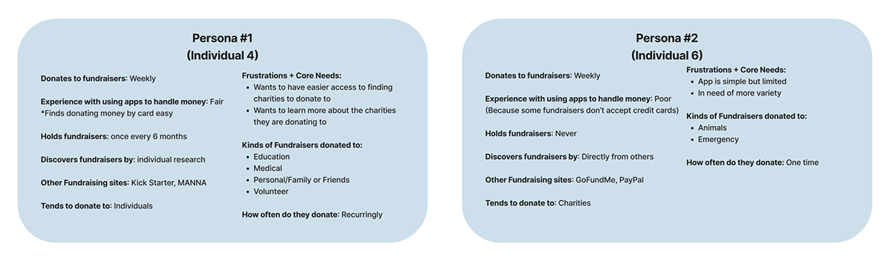

Venmo Fundraising
Full case study and prototype for a conceptual Venmo Fundraising feature.

Problem Statement and Introduction
Fundraising using multiple apps can quickly become confusing as there is a disconnect between the promotion and donation sites on completely different platforms. People looking to create fundraisers or donate to them often find it difficult to advertise or find a cause to support. We created a prototype for Venmo Fundraising which streamlines the donation and fundraising process by allowing users to come to one place and complete these actions. With the already social money transfer aspect of Venmo, users can showcase their fundraisers to their friends and search for others to sponsor.
Venmo Fundraising was created for anyone and everyone to use. We wanted to make donating and creating a space to donate simple for all users.
Component Mapping
Our initial choices were: Venmo Fundraising, Business Profile Improvement, and a Family Feature, but ultimately we decided to work on the Venmo Fundraising idea as we thought it would be more useful and have more of an impact on users.
- The fundraising feature makes donating easier and more accessible/streamlined, the social aspect of Venmo may encourage users to donate to the fundraisers that their friends are donating to
- Business Profile already exists, it was not as essential to Venmo, it has less of an impact than the fundraiser feature
- Family/Couples Feature isn’t as necessary since transactions can still occur between people just not in large groups; it could be simpler to send money to one person rather than multiple people at once
Surveys
After we decided that we were going to work on Venmo Fundraising, we wanted to gather information about the experience of Venmo's general audience, so we created surveys to understand our users.
Notes:
- Our survey had a mixture of multiple choice questions and short answer questions that would help the user go more in-depth about their choices
- We wanted to see what apps our audience was already using to fundraise and their experience with fundraising in the past
- We incorporated their responses into our prototype by making sure to focus on things that they wanted improvement on in the other apps they've used and how frequently they've used a specific feature
Findings:
- We found that most people have donated to a fundraiser before
- We found that most people donate to a charity when they donate to a fundraiser
- A common pain point was generally making fundraising more accessible and simple for users
User Personas
Based off of the information we gathered from our surveys, we created persona’s predicting our potential users needs.
Low-Fidelity Wireframes
User Flow Chart and Problem Solutions

Proposed Solution
Fundraising and donating can be difficult because users have to switch between the promotion app and the donation/fundraising app; however, Venmo Fundraising solves this by providing a single and simple space to create fundraisers and donate. Since it is already a commonly used money transfer app, this feature would be easy and logical to incorporate. The social aspect of seeing your friend's activity also makes it so that promotion for a fundraiser is accessible as well.
After Sample User Testing:
We found that several things needed improvement:
- There were no exit/finish buttons on the last page which was confusing to our project manager so we improved on our design by including a preview page
- The "Step 1, Step 2, etc." was repetitive above the progress bar so we removed them from the page
- We added more exploring features to the homepage so your own fundraiser wasn't the main focus
- We decided to develop on the first user flow variation because through our conversation with our project manager we found that we wanted our users to be able to create a fundraiser with as little as mistakes or confusion as possible. The minimal design of the first flow variation allowed for this. It also has more detail as it includes a search for charity option.